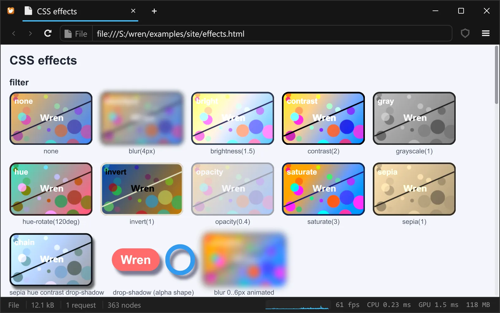

Wren
A browser where WebAssembly runs everything, JavaScript included
WebAssembly is Wren's only execution engine. The JavaScript of a page runs in QuickJS-ng compiled to a WebAssembly module, in the same sandbox as any other module; a page can also skip JavaScript and be WebAssembly calling the web APIs directly. The engine around it is written from scratch in Odin, for Windows, and draws everything on the GPU.
Version 0.2.0, an early preview · Windows x64 · MIT license

CSS filters, backdrop-filter and blend modes, drawn by Wren's GPU compositor.
The idea
Browsers carry a native JavaScript engine and added WebAssembly next to it. Wren starts from the other end: WebAssembly is the only way code runs, and JavaScript is one more WebAssembly module, held to the same limits as any other.
JavaScript, inside WebAssembly
Scripts run in QuickJS-ng compiled to WebAssembly: one instance per page and per worker, a capped heap, scripts stopped cleanly when they run too long. A new page's engine starts in about 0.5 ms. Off with one setting, globally or per site.
Or WebAssembly directly
A page can name its modules with <script type="application/wasm"> and call the browser
without any JavaScript. Every import is described once, in api/*.widl, and generated: 25
modules, 672 functions. A call into the browser costs about 7 ns.
Written from scratch in Odin
Style, layout, painting, the DOM, the Fetch policy and the shell are new code in Odin, drawn on Direct3D 11. HTML parsing, the Wasm runtime, the JavaScript interpreter and image codecs are proven libraries; text, networking and decoding use what Windows provides.
Features
What the 0.2.0 preview does today. Every number on this site was measured on the development machine; the notes behind them are in the repository history.
The web platform, from its specifications
The JavaScript bindings are generated from the official Web IDL (webref) with Web IDL's rules: DOM, CSSOM,
events, observers, custom elements, script loading with ES modules, fetch, XHR, streams, storage,
WebSocket, workers, crypto.subtle. 2,630 of 4,991 members are implemented; the others are
absent, so feature detection sees the truth.
Measured against the standards
The engine in WebAssembly passes 99.92 % of test262. 4,494 web-platform-tests files run with every change, 106,188 subtests pass, and any regression fails the test suite.
Shadow DOM
Declarative shadow roots that render even without JavaScript, slots, encapsulated styles with
:host, ::slotted(), ::part() and :state(),
constructable stylesheets, event retargeting: web components, such as MDN's, show up.
Nothing runs outside the sandbox
Every call from the browser into a module, JavaScript included, has a deadline
(wasm.max_call_ms), and each module's memory is capped. A loop that never returns is interrupted;
a crashed engine loses the page's scripts, not the browser.
Wasm pages, any number of modules
Modules are fetched concurrently and run in document order, each in its own instance sharing the DOM. Wasmtime 49 with Cranelift, a memory cache and an authenticated disk cache of compiled code.
Modern CSS
Cascade layers, custom properties and @property, container queries, CSS Color 4 and
color-mix(), math functions, flexbox, Grid Level 1 with subgrid, transforms, animations
and transitions; text placed vertically as Chromium places it.
Effects on the GPU
filter, backdrop-filter, the 16 blend modes plus plus-lighter
and plus-darker, clip-path, masks, background-clip: text, linear,
radial and conic gradients interpolated in sRGB, Oklab, Oklch, Lab and more.
Text on DirectWrite
Per-character font fallback, OpenType shaping and features, bidirectional text, line breaking with dictionaries for Thai, Lao, Khmer and Burmese, variable fonts, WOFF2, colour emoji in every font format.
Images
PNG, JPEG, GIF, BMP, ICO and TIFF through Windows; WebP, AVIF and SVG built in, whatever Windows has installed, with ICC colour management. Decoding runs on its own threads.
At the display's refresh rate
Frames follow the monitor's exact rate, with a budget of 1000/Hz. Wheel scrolling a page of 10,000 paragraphs: 1.4 ms CPU and 2.3 ms GPU at the 99th percentile, under the 5.56 ms of a 180 Hz screen. The start page is drawn 0.3 s after launch.
Security from the standards
One policy layer for every request: CORS with preflights, cookies (third-party cookies blocked by default), Content Security Policy for scripts and Wasm modules, HSTS, mixed content blocking, referrer policy.
Everything is configurable
about:config lists every setting with its description, default, bounds and unit:
rendering, scrolling, fonts, network limits, Wasm and JavaScript limits. Nothing is hard-wired.
Frame statistics built in
The status bar draws a graph of every frame by phase. A click opens CPU and GPU percentiles, compositor, layout, memory and the time spent in Wasm.
A native window
Tabs in the title bar with favicons and Snap Layouts, error pages, downloads, local folders and dropped
files, pages that follow Windows' light or dark mode, selection, find in page, zoom,
view-source: and a keyboard path through all of it.
Screenshots
Unedited captures of Wren on Windows 11.

Plain JavaScript, run by QuickJS-ng compiled to WebAssembly. 
Shadow DOM: declarative roots, slots, ::part(), a custom element.
odin-lang.org, its scripts running: the theme is picked by JavaScript. 
sacha.house: Tailwind CSS, background-clip: text, a fieldset legend, COLRv1 emoji.
Tabs in the title bar, with favicons; the window keeps Snap Layouts. 
Frame statistics: phases, GPU steps, compositor, display, memory, build.
What works, and what doesn't yet
Wren is a young engine with one goal, and an honest list of gaps.
Works well
- Documents and CSS-heavy sites. Compared pixel by pixel with Edge at 1280×720: 0.7% of pixels differ on example.com, 4.5% on rust-lang.org, 7.3% on webassembly.org.
- Sites whose scripts add to the page: menus, themes, web components, observers. Wikipedia, MDN, webassembly.org and odin-lang.org run their scripts.
- Pages scripted in WebAssembly, with the DOM, events, timers, fetch, WebSocket, workers and storage.
- HTTPS through WinHTTP, cookies, CORS and CSP.
- Web fonts (WOFF, WOFF2, variable fonts), SVG, AVIF and WebP images.
- Smooth scrolling, selection, find in page and zoom on long pages.
Not yet
- JavaScript is interpreted, without a JIT. About 55 times slower than Edge on the Octane benchmarks, and a simple DOM call costs about ten times as much: script-heavy pages are slow.
- About half of the web platform's members. No
<canvas>drawing, IndexedDB,ResizeObserver, Web Animations or service workers;<iframe>content is not loaded. The full list is docs/js/coverage.md. - No HTTP cache: every request goes to the network. No HTTP authentication.
- No IME for East Asian input, no vertical writing modes, grayscale text anti-aliasing only.
- No
<video>or<audio>playback. - Wasm threads and shared memory are off. The guest SDK exists for Odin only; the ABI is documented for other languages.
- Windows only.
Write a page for Wren
In JavaScript, as for any browser: Wren runs a page's scripts, classic or modules, and what it
does not implement is simply absent. Or in WebAssembly, without JavaScript: a page names a module, which exports
wb_main and calls the browser through the generated Odin SDK, sdk/odin/web. The whole
API, with its ABI, is in docs/api.
package hello
import "web:web"
on_click :: proc "contextless" (user: i32, ev: web.Event) {
out := web.Document_getElementById("out")
web.Node_setTextContent(out, "Hello from WebAssembly!")
}
// called once the document is parsed
@(export)
wb_main :: proc "contextless" () {
button := web.Document_getElementById("greet")
web.EventTarget_addEventListener(button, "click", on_click)
}<script>
document.getElementById("greet").addEventListener("click", () => {
document.getElementById("out").textContent = "Hello from JavaScript!";
});
</script><!doctype html>
<meta charset="utf-8">
<title>Hello, Wren</title>
<script type="application/wasm" src="hello.wasm"></script>
<button id="greet">Say hello</button>
<p id="out"></p>odin build hello -target:freestanding_wasm32 -no-entry-point ^
-default-to-nil-allocator -collection:web=sdk/odin ^
-out:hello.wasm -o:sizeThe module above compiles to 702 bytes. Open index.html in Wren (a file:///
address or a Windows path works) and click the button. For the JavaScript version, put the script at the end
of the page instead of the module.
Architecture
From what you see down to the platform. A page owns its DOM, its Wasm instances (its JavaScript realm is one of them), its requests and its timers; closing a tab closes all of it.
Wren's own code · the WebAssembly boundary · a library or a Windows service
Credits
Wren is written by sachahjkl. It stands on these projects:
- Odin, the language everything is written in.
- gui_toolkit, the GPU drawing, text and UI layer.
- Wasmtime (Bytecode Alliance), the WebAssembly engine.
- QuickJS-ng, after Fabrice Bellard's QuickJS, the JavaScript interpreter.
- wasi-libc and Zig, its C library and compiler.
- webref, the Web IDL of the specifications.
- Lexbor, HTML parsing, URLs and encodings.
- resvg, SVG rendering.
- rav1d and zenavif-parse, AVIF.
- image-webp, WebP.
- qcms, colour management.
- brotli-decompressor, WOFF2 fonts.
- Public Suffix List, sites and cookies.
- test262 and web-platform-tests, the conformance suites.
- Windows: Direct3D 11, DirectWrite, Direct2D, WinHTTP, WIC, BCrypt.
- The web standards of the WHATWG, the W3C, TC39 and the WebAssembly Community Group.
License
Wren is free software under the MIT License. The libraries it links keep their own licenses.